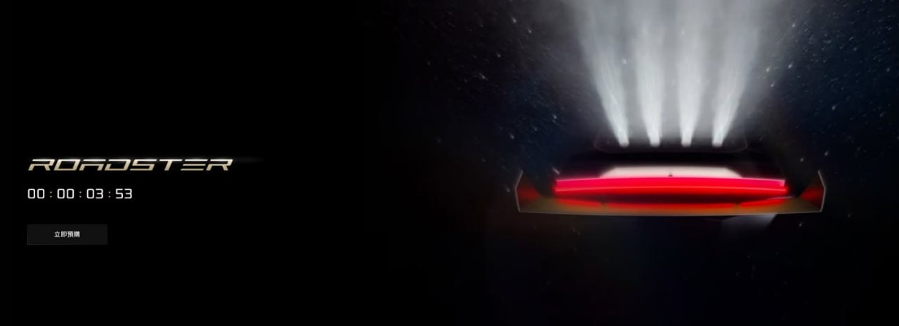
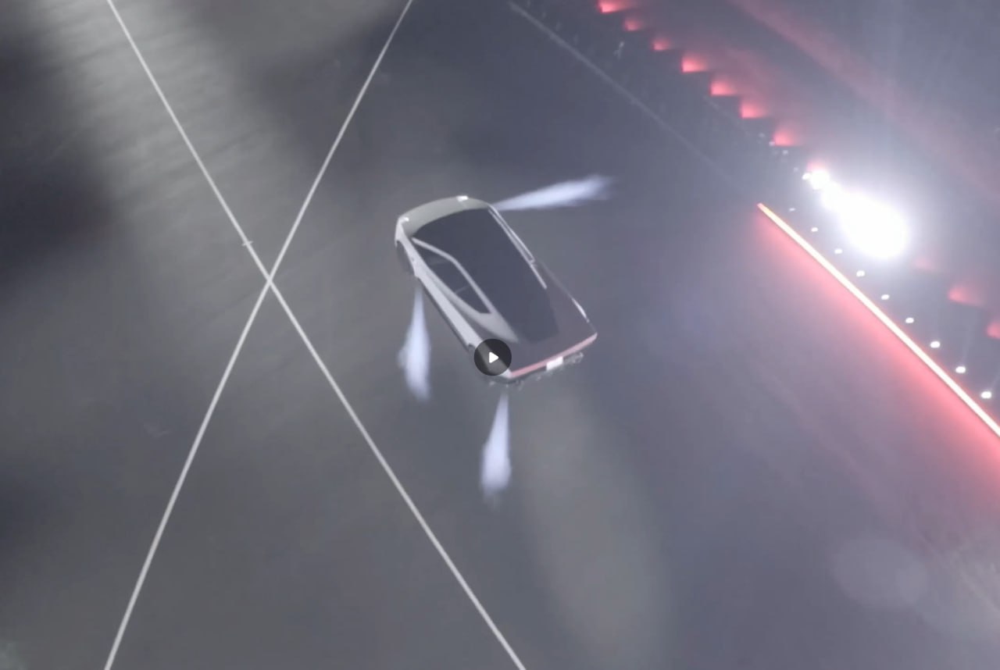
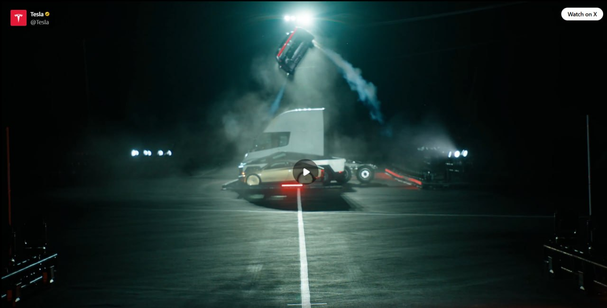
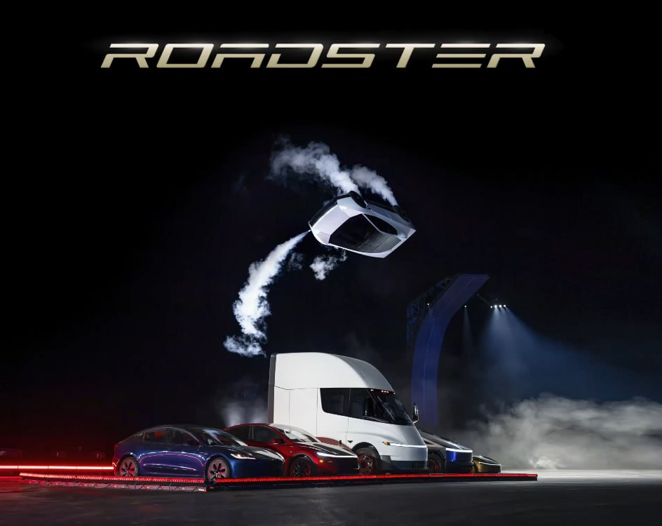
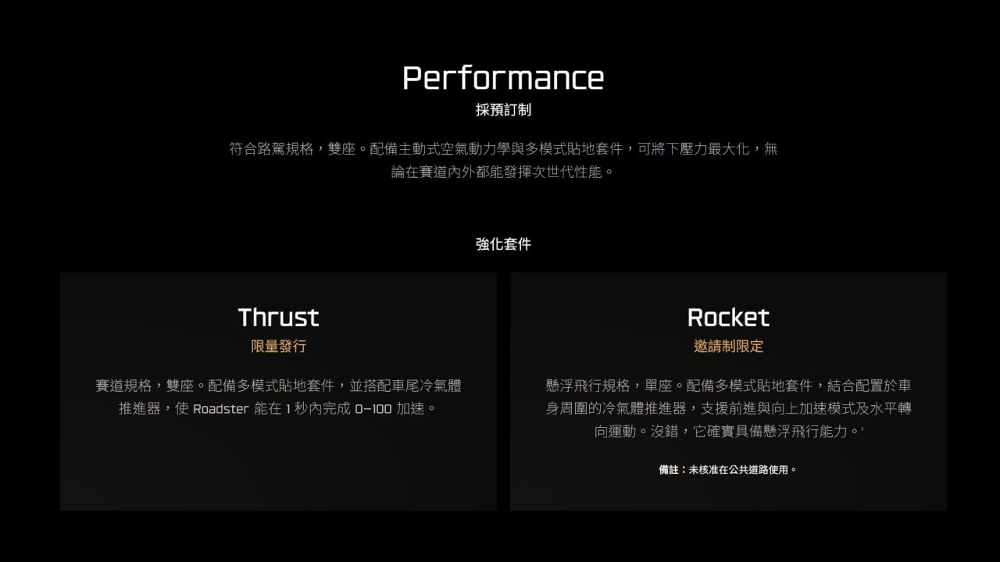
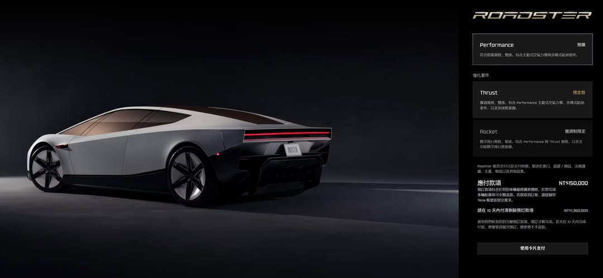

過去 26 小時共 7 則，全部在 10/16 早上 Tesla 新一代 Roadster 發表會直播期間發出：一則開場文字（順帶提到 Porsche Mission S），其餘是直播截圖和台灣官網的預訂頁。沒有集數推播或業配，也沒有其他產業或個股評論。
porsche 搶先推一台超帥的 mission s，四分鐘後分曉五年內有沒有機會交車
https://livestream.tesla.com/
https://www.tesla.com/zh_tw/roadster

#6486 是 Tesla 台灣官網 Roadster 頁的倒數畫面，顯示 00:00:03:53（約剩 4 分鐘），旁邊有「立即預購」按鈕。
講解：主委同時點了兩台車。Porsche Mission S 是 Porsche 剛亮相的中置引擎超跑概念車，官方定位是「設計研究」，但 CEO Michael Leiters 表示會用新的超跑平台做一台「明顯高於 911」的中置引擎車。它走燃油或油電路線，平台不做純電版，Porsche 給的理由是「沒有需求」，量產時間尚未公布，媒體推測 2030 年前上市。「五年內有沒有機會交車」是在酸 Tesla Roadster：這台車 2017 年就發表過、當時說很快上市，之後一再延期，原訂 10/1 的這場活動也因天候延後。
這沙小

#6487：直播俯拍畫面，一台銀色跑車在場地上，車身四周噴出白色氣流（推進器）。
..........

#6488：Tesla 官方 X 影片截圖，Roadster 噴著氣騰空飛過 Semi、Cybertruck 等車輛。

#6489（無文字）：官方宣傳照，上方是 ROADSTER 字樣，車子在空中越過一排 Model 3、Model Y、Semi 等 Tesla 車款。
講解：根據 TechCrunch 的報導，Roadster 於美國時間 10/15 晚間在德州 Waco 附近發表。示範內容是靠風扇吸附加推進器爬上倒置坡道、旋轉後落地，再於行進間跳過 Cybercab、Cybertruck、Semi、Model Y 與 Model 3。動力來源是「冷氣體推進器」，也就是把壓縮空氣從噴嘴噴出、靠反作用力推車，不燃燒燃料。車上 10 個推進器共用約 600 公升壓縮空氣，可以重新充填，車身空隙都塞滿碳纖維纏繞壓力容器（COPV）。Musk 說推進器由 Tesla 和 SpaceX 工程師一起開發。主委的兩則反應（「這沙小」「……」）就是看到車飛起來的直接傻眼，貼文本身沒有進一步評論。

#6490（無文字）：台灣官網規格說明。Performance（採預訂制）符合路駕規格、雙座，有主動式空氣力學與多模式貼地套件。強化套件 Thrust（限量發行）是賽道規格、雙座，加裝車尾冷氣體推進器，宣稱 0–100 加速不到 1 秒。Rocket（邀請制限定）是懸浮飛行規格、單座，車身四周都有推進器，「確實具備懸浮飛行能力」，並註明「未核准在公共道路使用」。

#6491（無文字）：台灣官網預訂結帳頁（選 Performance）。應付款項 NT$150,000，10 天內需付清剩餘預訂款 NT$1,360,000，合計約 NT$151 萬。頁面也註明交付時程依法規、測試、生產等因素而定。
講解：官方沒有公布售價，目前只開放付訂金。美國訂金是 Performance 5 萬美元、Thrust 25 萬美元，台灣 Performance 合計約 NT$151 萬，大致等於 5 萬美元。Musk 說 2028 年開始生產，所以「五年內交車」以官方說法來看並非不可能，但這台車延期的紀錄很長，時程仍需打折看待。另外要注意官網中文寫的是「0–100」（公里），英文報導寫的是 0–60 mph（約 0–97 公里），兩者都是官方宣稱、尚無第三方實測。
報導中的質疑也要一併看：Musk 自己說「安全不是主要目標」，在意安全的人不該買；COPV 這類壓力容器過去和 SpaceX 火箭爆炸事故有關，用在車上的安全性受到質疑。Musk 也承認這台車對營收幫助不大，定位是品牌形象用的「光環產品」。CNBC 標題提到這次合作「助長 Tesla 與 SpaceX 合併的猜測」，但這是媒體的解讀，不是官方說法，而且這次無法讀到 CNBC 全文。